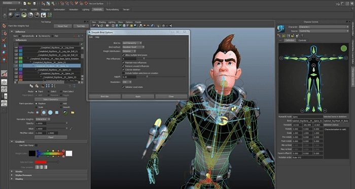
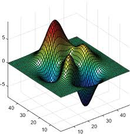

Computer Graphics Applications
Computer Graphics has various applications. This includes:

User Interface
Within a user interface, users will interact with buttons, windows, images, and other objects. A program can easily communicate and provide for the user when its functions are translated clearly through those objects. Now, the user can navigate through applications smoothly without a problem.

Animation
Animation programs help create and produce animated film and animated effects in television shows, videos games, advertisements, and other kinds of media. 3D models are made within vector graphics and use an axis for placement. Certain algorithms provided by the programs themselves assist animations by predicting in-between frames, saving production time.
